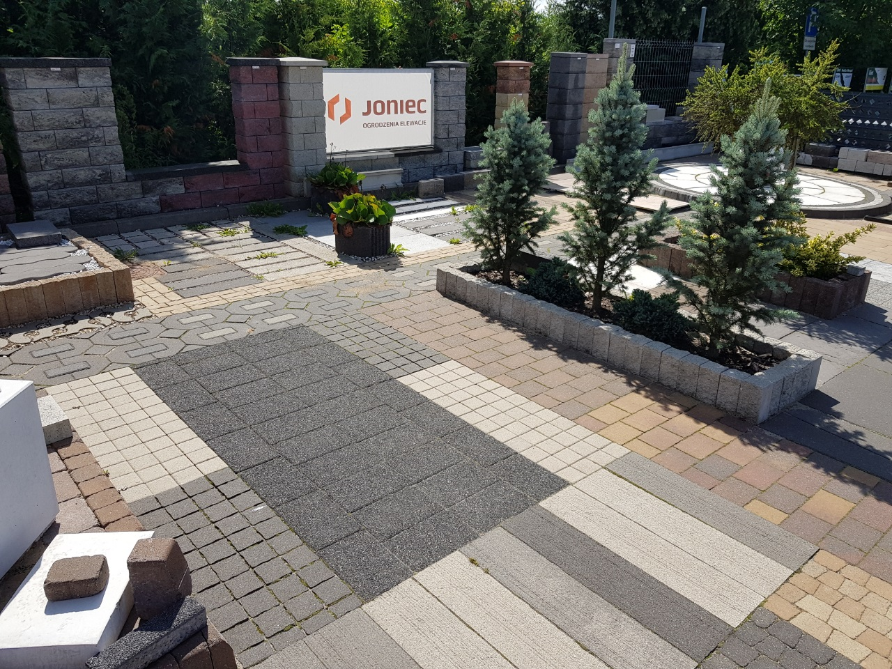
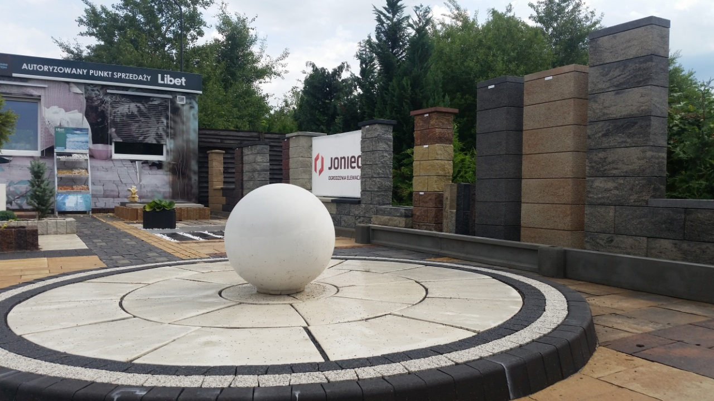

Prosty, przewidywalny proces. Bez niespodzianek i bez naciągania.
Przyjeżdżamy, oglądamy, doradzamy. Bez opłat i bez zobowiązań.
Jasna cena i termin na piśmie - zanim cokolwiek ruszy.
Robimy zgodnie ze sztuką i na umówiony czas.
Dajemy gwarancję na robociznę i trzymamy termin.
Zakres prac, jaki robimy najczęściej - pełny opis i wycenę znajdziesz niżej.
Ogrodzenia, bramy, podjazdy i tarasy wykonane u klientów, a także ekspozycja z naszego ogrodu wystawowego.



Zadzwoń lub napisz - przyjedziemy, obejrzymy i podamy jasną cenę. Bez zobowiązań.